Home
Services
Equipment
Sales
About
Contact
Back to Equipment
Professional Mixing Consoles
Browse our selection of professional digital and analog mixing consoles
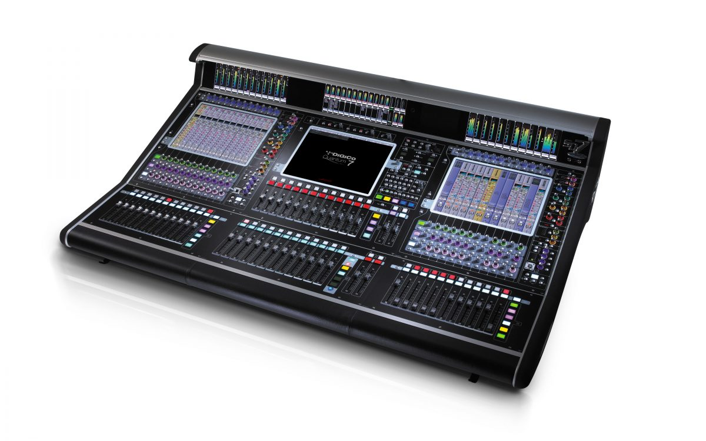
DiGiCo Quantum 7
256 Input Channels
128 Aux / Sub-Group Busses
48 x 48 Full Processing Matrix
3 x 15" Touch Screens
Quantum Processing
Request Quote
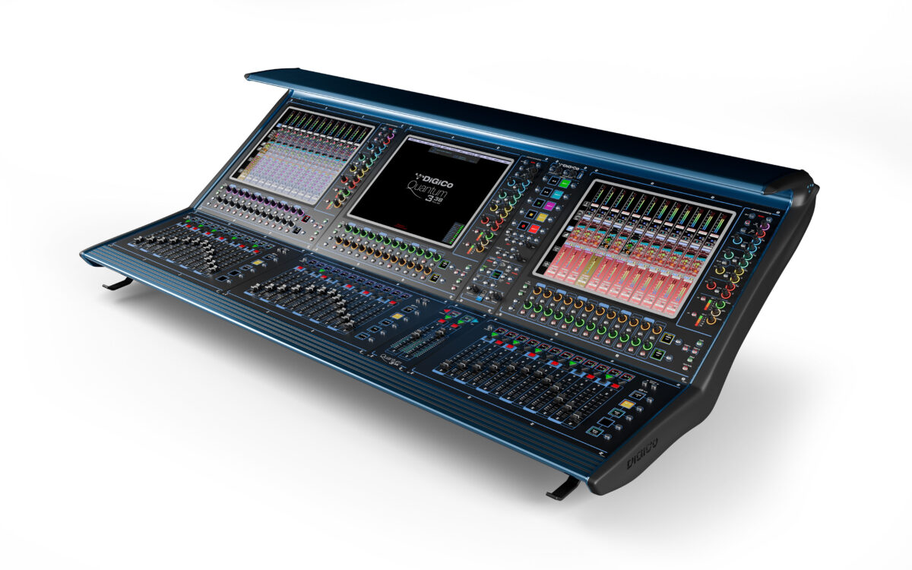
DiGiCo Quantum 338 Pulse
156 Input Channels
72 Aux / Sub-Group Busses
24 x 24 Full Processing Matrix
3 x 17" Touch Screens
Quantum Processing
Request Quote
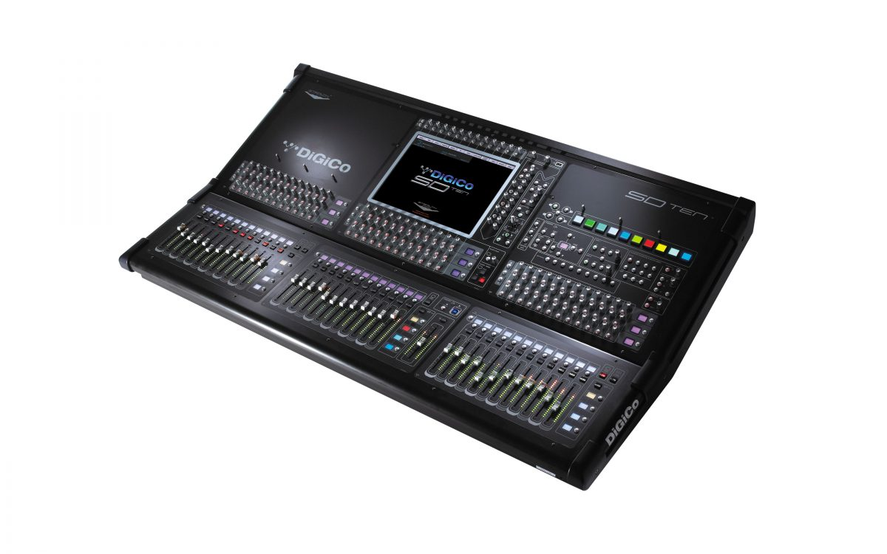
DiGiCo SD10
144 Processing Channels
64 Aux/Sub-Group Busses
24 x 24 Full Processing Matrix
15" Touch Screen
48/96 kHz Sample Rate
Request Quote
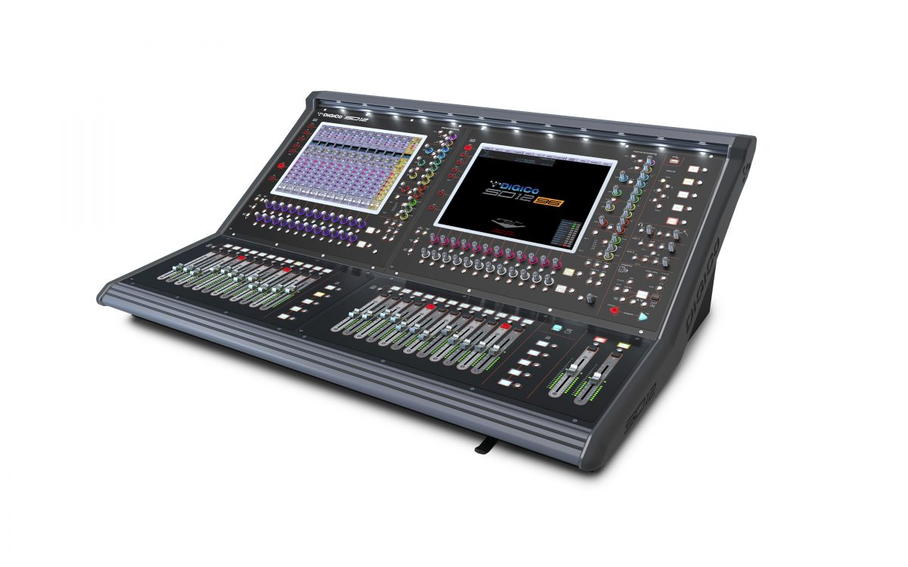
DiGiCo SD12 96
96 Input Channels
48 Aux/Group Busses
12 x 8 Full Processing Matrix
Dual 15" Touch Screens
48/96 kHz Sample Rate
Request Quote
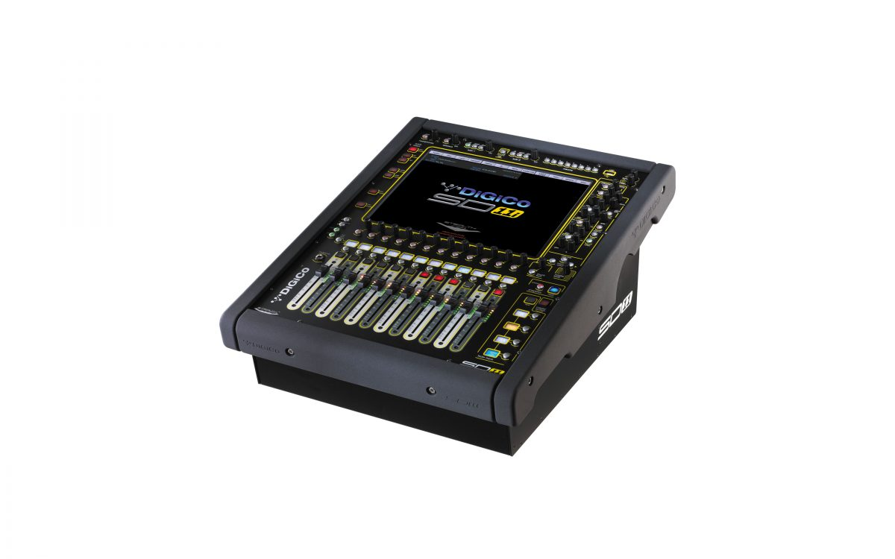
DiGiCo SD11
80 Processing Channels
32 Aux/Group Busses
12 x 8 Full Processing Matrix
15" Touch Screen
48/96 kHz Sample Rate
Request Quote
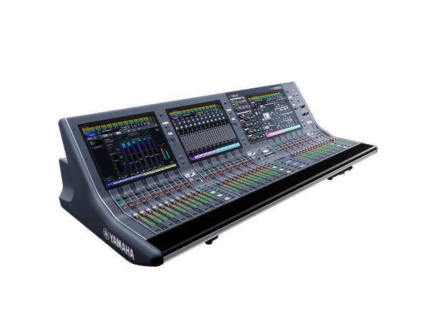
RIVAGE PM5
120 Input Channels
48 Mix Buses + Stereo
24 Matrix Buses
3 x 15" Touch Screens
96kHz Processing
Request Quote
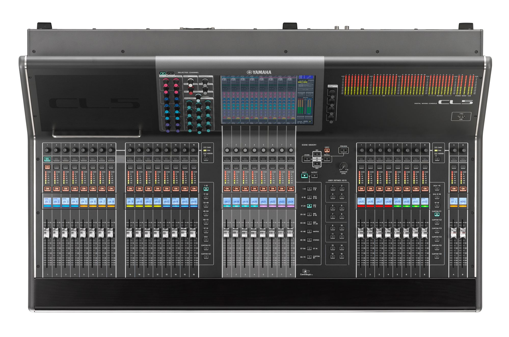
CL5
72 Mono + 8 Stereo Inputs
24 Mix + 8 Matrix
Dante Network Audio
Touch Screen Interface
Premium Effects Rack
Request Quote
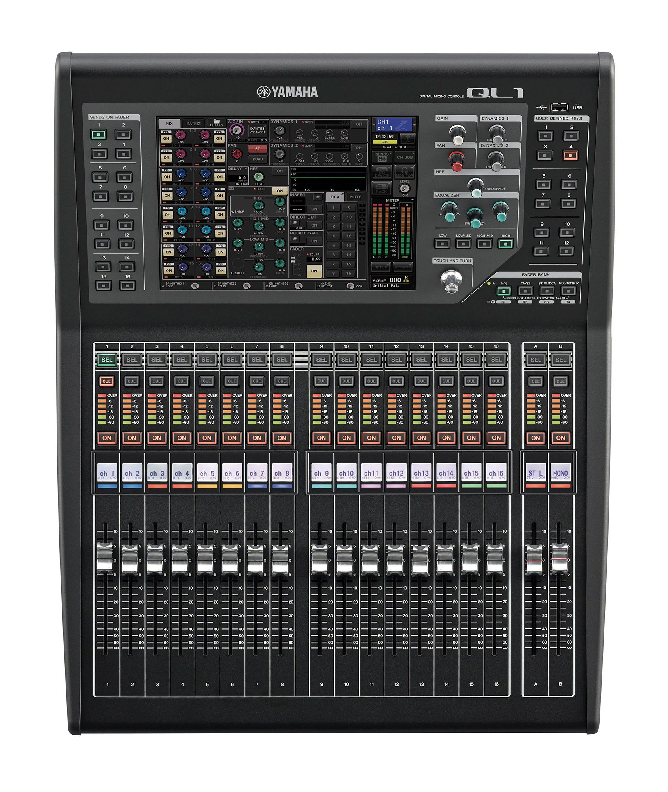
QL1
32 Mono + 8 Stereo Inputs
16 Mix + 8 Matrix
Built-in Dante Interface
Touch Screen Control
Local I/O: 16 in, 8 out
Request Quote
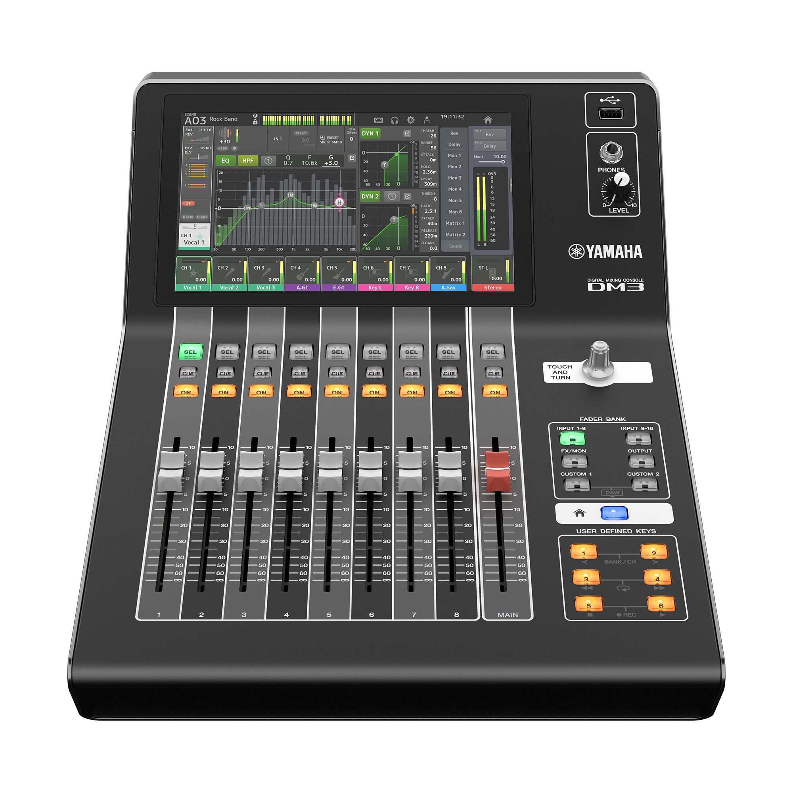
DM3-D
16 mono + 1 stereo + 2 FX return
Busses: 1 Stereo, 6 Mix, 2 FX, 2 Matrix
Local I/O: 16 Mic/Line
Dante: 16 inputs, and 16 outputs
48kHz/96kHz
Request Quote
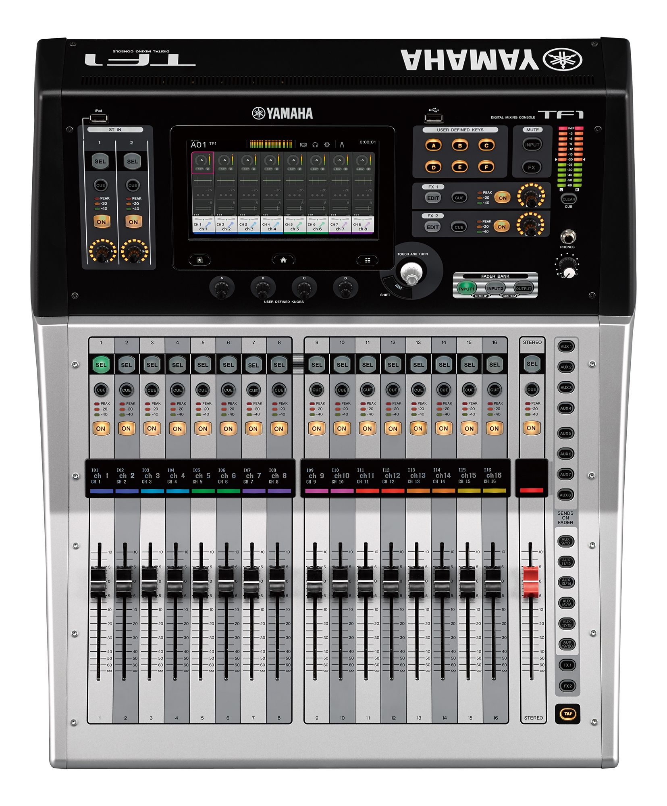
TF1
32 Channels
40 input mixing channels
20 Aux buses (8 mono + 6 stereo)
7" Touch Screen
16 analog XLR/TRS combo mic/line inputs
Request Quote
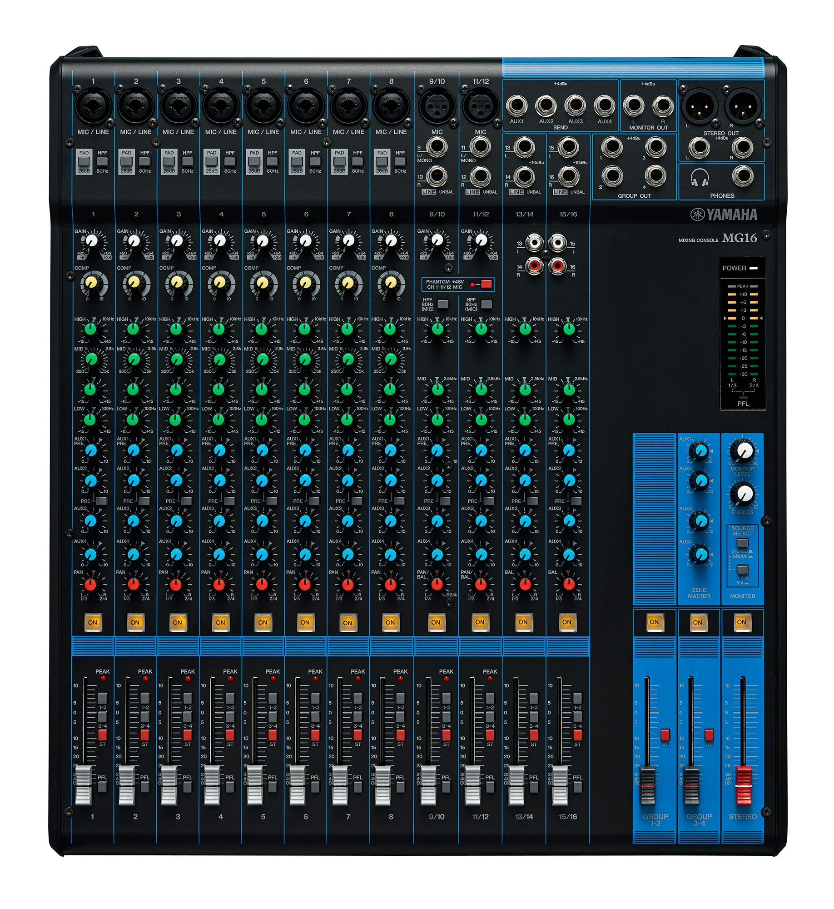
MG16
16 Input Channels
4 AUX Sends
SPX Digital Effects
1-Knob Compressors
USB Audio Interface
Request Quote
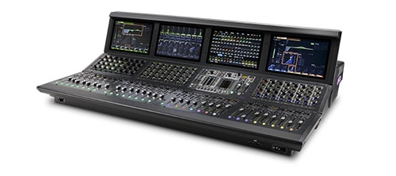
VENUE S6L-32D
192 Input Processing Channels
96 + LCR Mix Buses
Real-time AAX Plugin Processing
32 + 1 Touch-sensitive Faders
AVB Audio Networking
Request Quote
VENUE Profile
96 Input Channels
24 Mix Buses
TDM Plugin Support
24 Touch-sensitive Faders
Pro Tools Integration
Request Quote
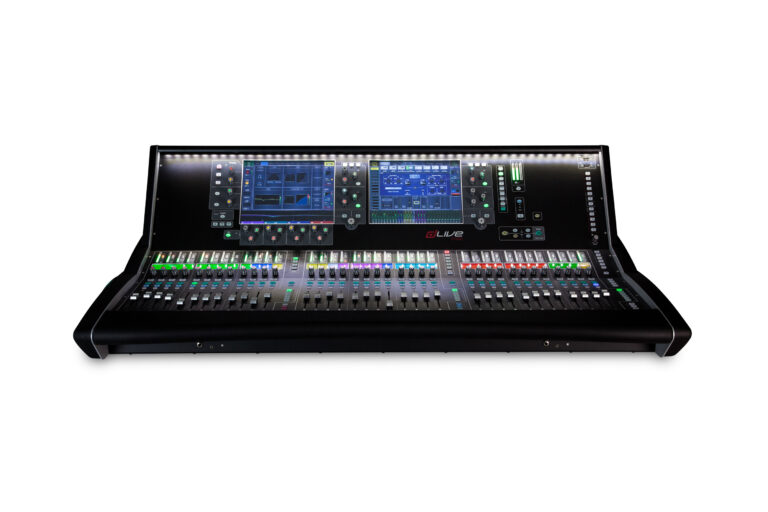
dLive S7000
128 Input Processing Channels
64 Mix Outputs
DEEP Processing
Dual 12" Touch Screens
96kHz Processing
Request Quote
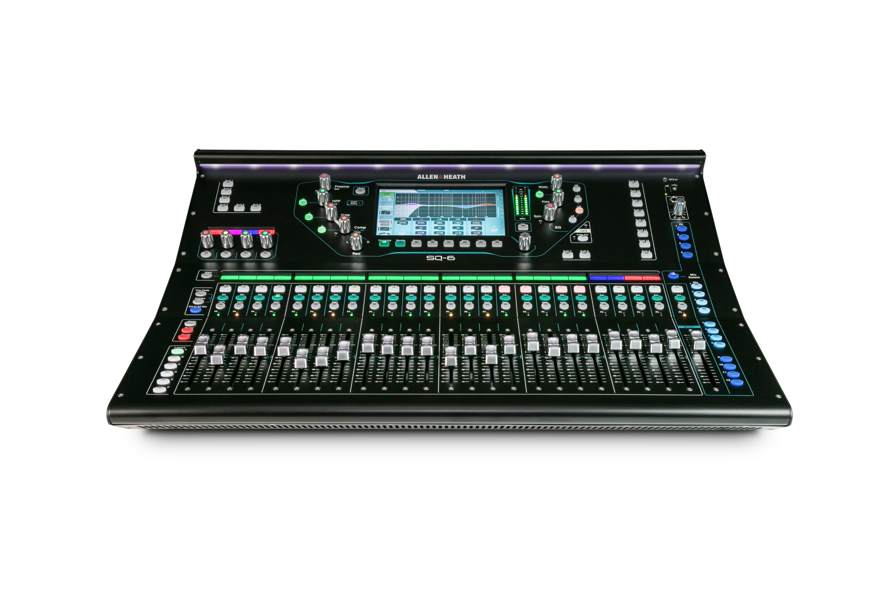
SQ-6
48 Input Channels
12 Stereo Mix Outputs
96kHz XCVI Core
7" Capacitive Touch Screen
SLink Digital Audio
Request Quote
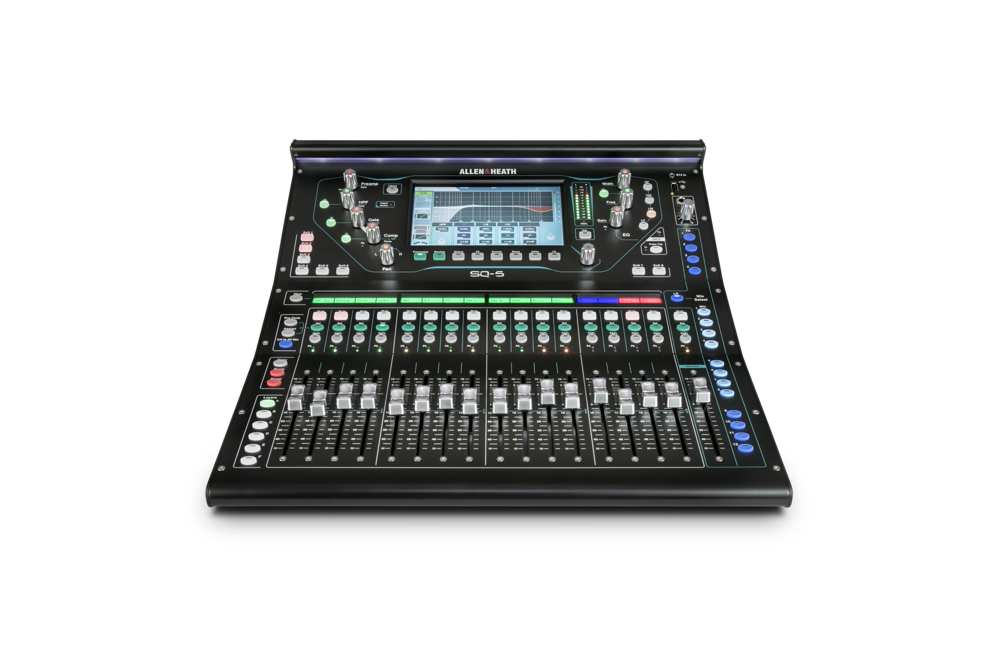
SQ-5
48 Input Channels
12 Stereo Mix Outputs
96kHz XCVI Core
7" Capacitive Touch Screen
16 Local XLR Inputs
Request Quote
1402-VLZ4
6 Onyx Mic Preamps
14 Total Inputs
3-Band EQ
4 Stereo Line Inputs
ALT 3/4 Stereo Bus
Request Quote
1202-VLZ4
4 Onyx Mic Preamps
12 Total Inputs
3-Band EQ
4 Stereo Line Inputs
High-Headroom Design
Request Quote
Onyx 16
12 Onyx Mic Preamps
18 Total Inputs
3-Band Perkins EQ
2 AUX Sends
USB Interface Built-in
Request Quote
ProFX16v3
11 Onyx Mic Preamps
16 Total Inputs
GigFX Effects Engine
3 AUX Sends
2x4 USB Recording
Request Quote